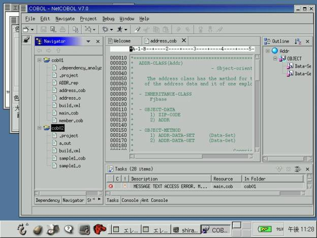
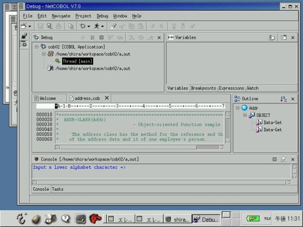

| Eclipse
Tools Cobol Subproject Proposal |
|
|
Description A COBOL IDE allows developers to develop COBOL applications with in a friendly, Eclipse-based environment, using various COBOL compilers provided by COBOL vendors. The COBOL IDE for Eclipse Subproject will build a fully functional COBOL Integrated Development Environment (IDE) for the Eclipse platform. Our focus is COBOL application development on Windows/Solaris/Linux for deployment on each platform. We are interested in participation from others who would like to extend our work in other directions. e.g. wizards for developing applications that use particular library or database or messaging APIs, or extension to other languages. We are proposing this code base form the initial code for the open source COBOL project hosted on eclipse.org under the eclipse tools project. The project goal would be the completion of a full featured COBOL environment for all platforms. We are looking for contributions from the open source community in the areas of testers, developers and general users who can help us ensure that the COBOL tools work well on all the Eclipse platforms. The source code for the project is is available here. Our first release function includes:
Bridge interface for COBOL compilers
and debuggers will be discussed with the contributors who will support
the project. Please see Appendix A for COBOL
IDE perspective and Appendix B for COBOL Debugger perspective. These screenshots
are from Fujitsu’s commercial COBOL product. Status This is a new project and the initial code base is from Fujitsu’s commercial COBOL product that supports Redhat Linux 7.2, Eclipse R2.0 Milestone 5 and Fujitsu NetCOBOL 7.0. Platforms The plugins are written in Java with no native code and thus may be ported to any platform supported by Eclipse. However, the plugins invoke a COBOL compiler and debugger via a bridge. Therefore, the plugins work only in systems where there is a COBOL compiler, debugger and a bridge for them. Content We provide a total of six plugins and packages:
For the contribution, the package
name is should be changed (e.g., org.eclipse prefix). Development plan We are supplying a separate project plan simultaneously with this proposal. We believe it will be possible to deliver a public release in December 2002.
We set below the features that have already been developed by Fujitsu Limited.
If you want to contribute to the development of this plugin, we welcome the opportunity to work with you. The plan will be updated to reflect the commitments made by contributors to this projects. License This project is licensed under the Common Public License.
|
|
Appendix A: COBOL IDE Perspective

Appendix B: COBOL Debugger Perspective
